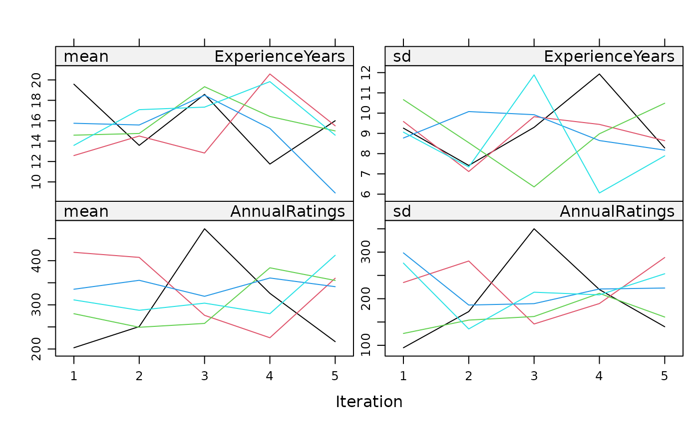
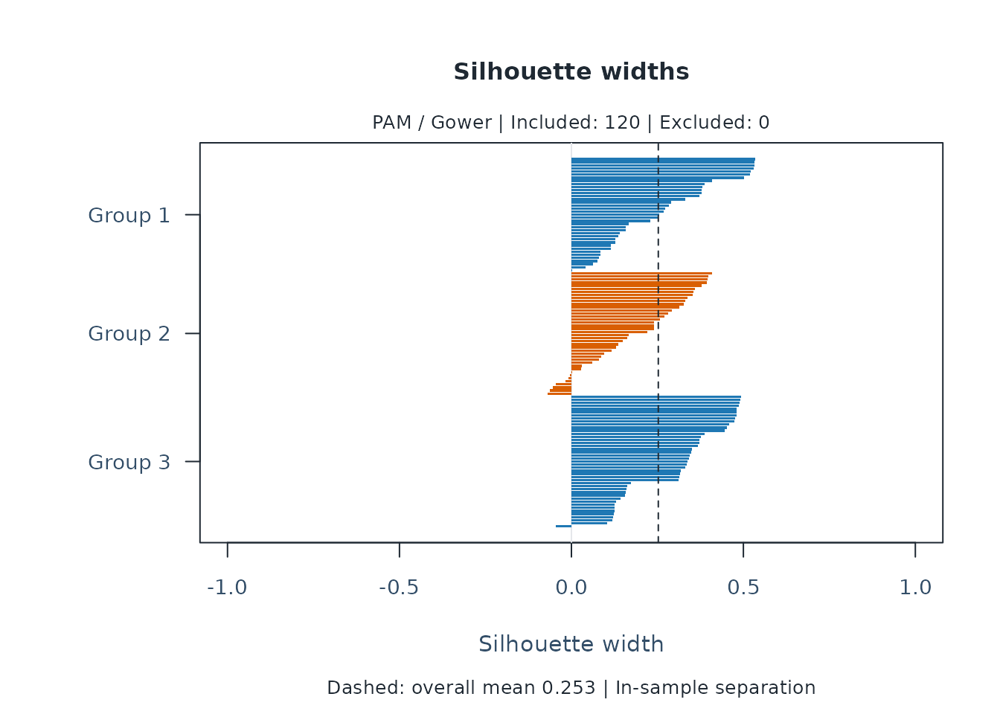
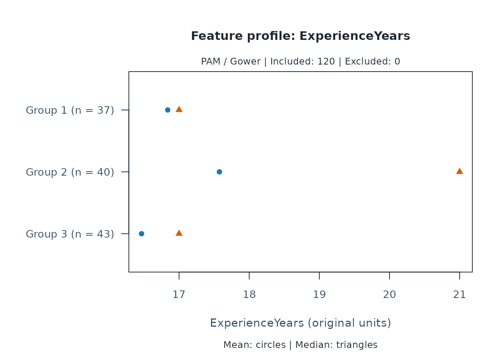
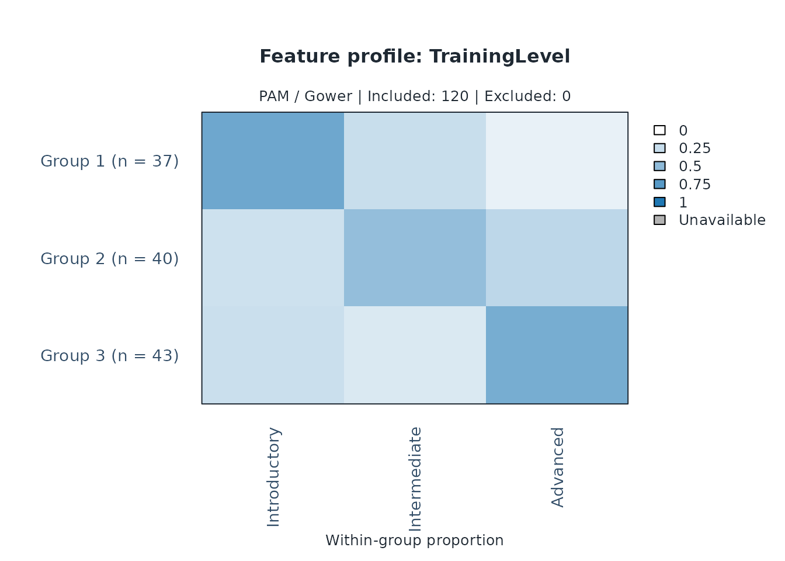
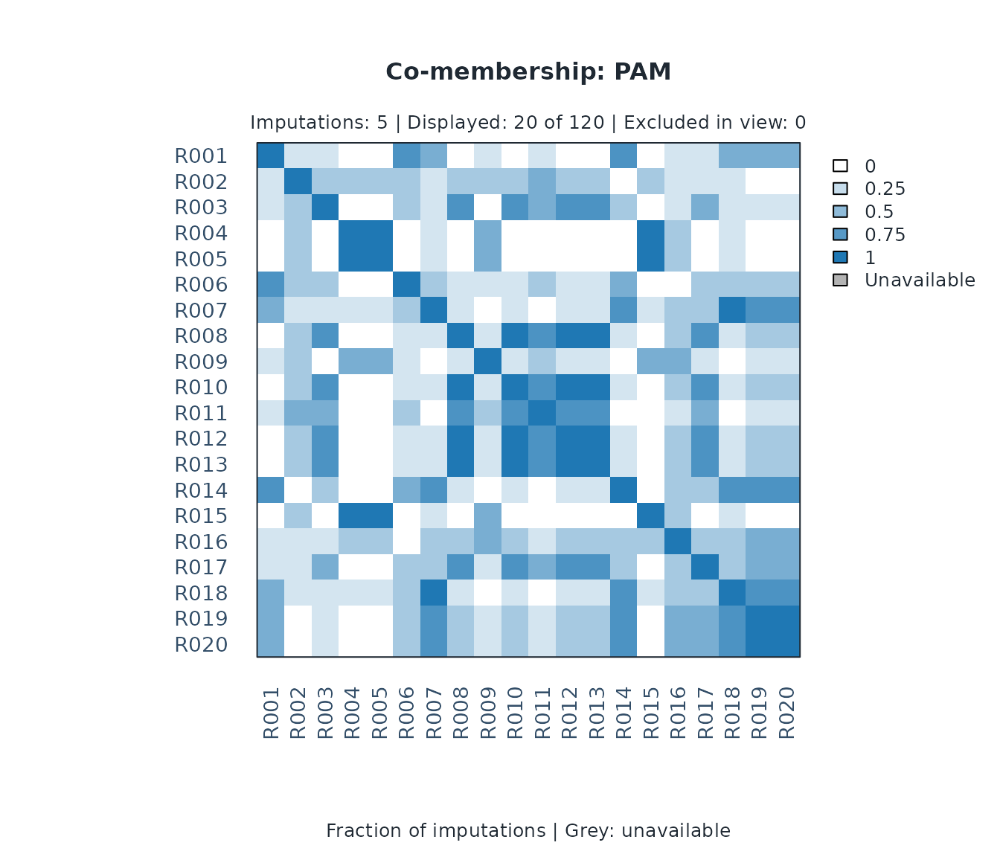
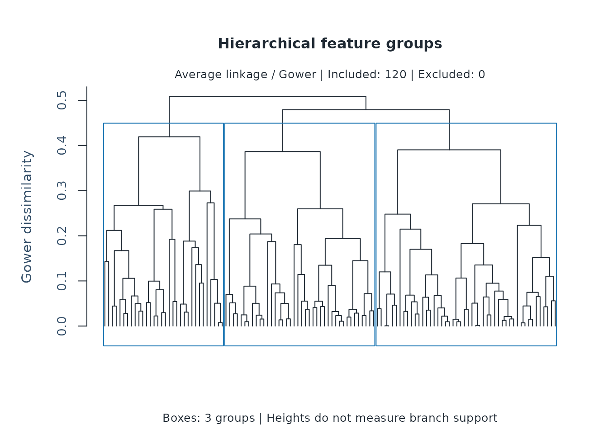
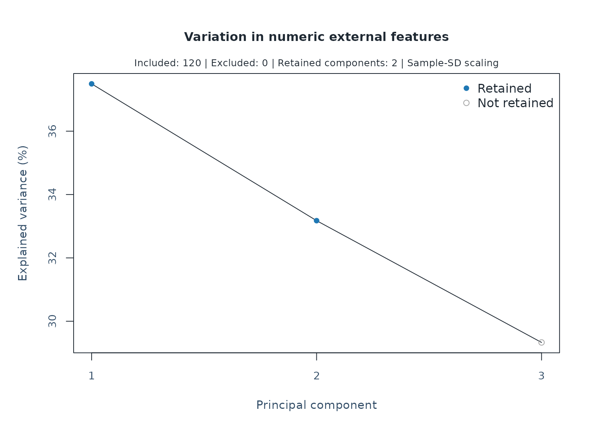
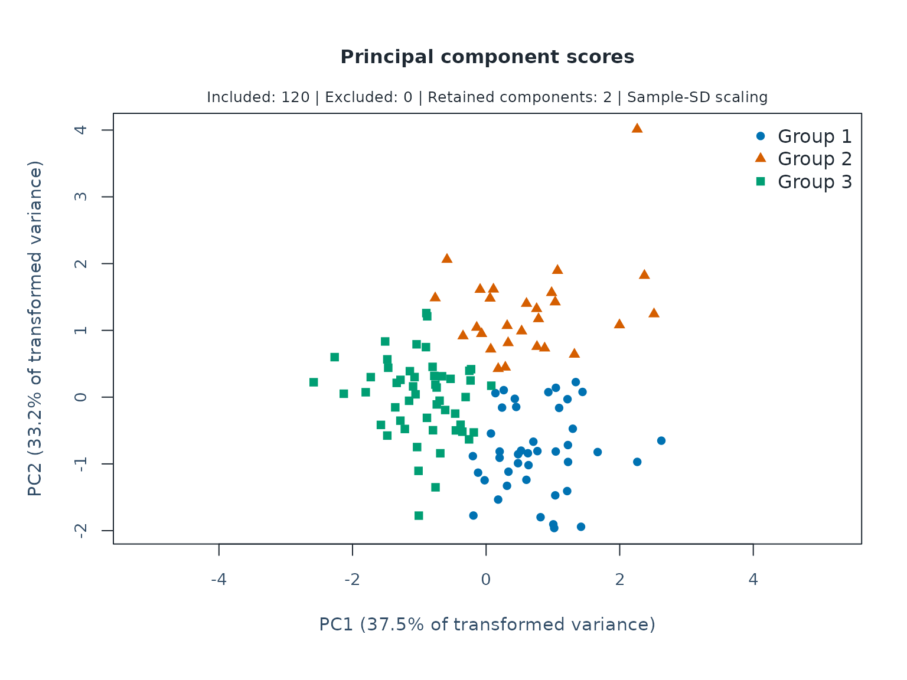
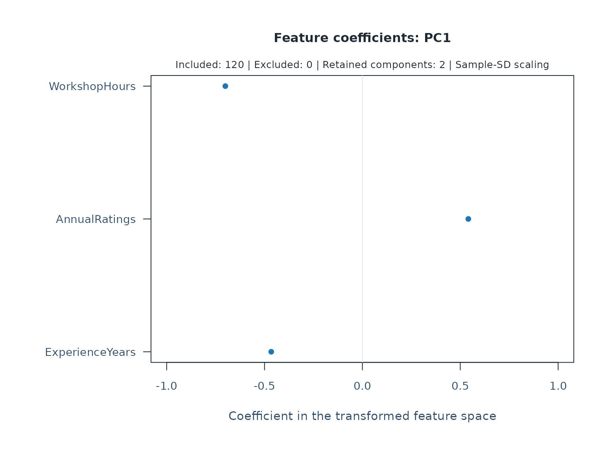
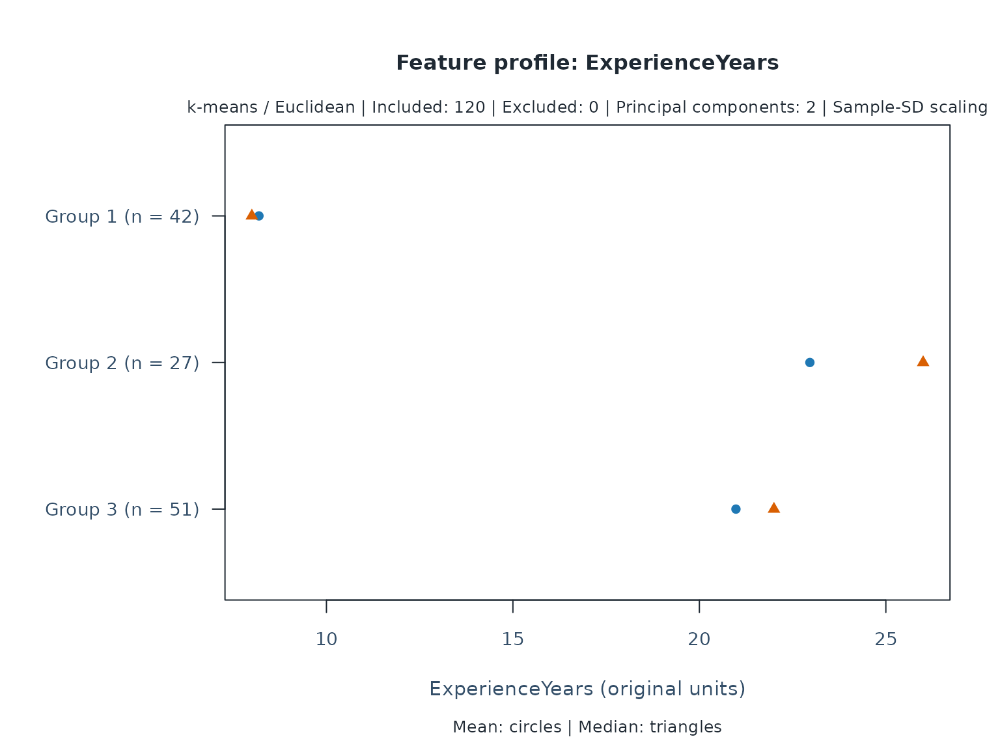

Exploring person, rater, and task attributes
Source:vignettes/mfrmr-external-features.Rmd
mfrmr-external-features.RmdAn assessment team wants to describe its raters’ backgrounds before planning training. Do groups summarize different combinations of experience, workload, and training? Would those descriptions change with the number of groups, feature weights, or plausible replacements for unrecorded attributes?
This example follows that question from a feature table to a comparison of partitions. It uses 120 fictional raters, not observations from an assessment program. No true groups are planted. Successful execution does not establish that these features, imputation models, or groups are appropriate for your raters. The groups describe backgrounds; they do not measure rater quality, severity, or ability, and do not identify which training will be effective. Later sections add separate person and task attributes, link all three classifications to a sparse assignment roster, and explain the roles of feature selection and PCA.
These APIs are available from version 0.2.4. Install the optional
cluster and mice packages to run the entire
example.
Choose attributes and their meaning
Use one row per rater, rather than repeating attributes for every rating. Keep identifiers separate from features. Select variables for the question before examining which choices produce attractive groups.
| Column | Meaning and coding | Role here |
|---|---|---|
ExperienceYears |
Completed years of rating experience; numeric | Feature |
AnnualRatings |
Number of responses rated in the previous year; numeric | Feature |
Specialty |
Main subject area; unordered factor | Feature |
TrainingLevel |
Highest completed training stage; ordered factor | Feature |
Certified |
Holds the relevant certification; logical | Feature |
WorkshopHours |
Hours of workshops attended in the previous year; numeric | Auxiliary imputation predictor |
MentoringYears |
Years in a formal mentoring role; undefined without that role | Reviewed, then excluded from the all-rater feature set |
library(mfrmr)
set.seed(20260921)
n <- 120L
raters <- data.frame(
Rater = sprintf("R%03d", seq_len(n)),
ExperienceYears = sample(0:30, n, replace = TRUE),
AnnualRatings = round(exp(rnorm(n, log(250), 0.6))),
Specialty = factor(sample(c("Language", "Science", "Social science"),
n, replace = TRUE)),
TrainingLevel = ordered(sample(c("Introductory", "Intermediate", "Advanced"),
n, replace = TRUE),
levels = c("Introductory", "Intermediate", "Advanced")),
Certified = sample(c(FALSE, TRUE), n, replace = TRUE),
WorkshopHours = sample(0:80, n, replace = TRUE)
)
has_mentoring_role <- sample(c(FALSE, TRUE), n, replace = TRUE, prob = c(.7, .3))
raters$MentoringYears <- ifelse(has_mentoring_role,
pmin(raters$ExperienceYears, sample(0:10, n, replace = TRUE)), NA_real_)
# Introduce unrecorded values only after generating the fictional attributes.
feature_names <- c("ExperienceYears", "AnnualRatings", "Specialty",
"TrainingLevel", "Certified")
missing_counts <- c(12L, 18L, 6L, 10L, 10L)
for (j in seq_along(feature_names)) {
raters[[feature_names[j]]][sample.int(n, missing_counts[j])] <- NA
}
head(raters)
#> Rater ExperienceYears AnnualRatings Specialty TrainingLevel Certified
#> 1 R001 17 545 Language Advanced TRUE
#> 2 R002 1 440 Language Intermediate FALSE
#> 3 R003 13 186 Science Advanced TRUE
#> 4 R004 7 NA Social science Introductory FALSE
#> 5 R005 21 255 Social science Advanced FALSE
#> 6 R006 2 150 Language Intermediate NA
#> WorkshopHours MentoringYears
#> 1 27 NA
#> 2 0 NA
#> 3 66 10
#> 4 30 NA
#> 5 60 NA
#> 6 21 NAThe Gower
distance calculation accommodates these mixed types. Numeric
features use their observed ranges. Ordered levels use ordered integer
codes, so the declared order and the spacing implicit in that coding
matter. Logical features treat both matches (FALSE/FALSE
and TRUE/TRUE) alike. Certification is therefore not coded
as a special presence-only attribute. Equal feature weights are a
starting choice; correlated or redundant attributes can still receive
too much combined influence. A highly unusual numeric value can also
change its feature’s range and hence other raters’ distances.
Distinguish unrecorded and undefined values
Here a missing mentoring duration means that the attribute does not apply. It is not a duration waiting to be estimated. A duration of zero would instead mean an applicable mentoring role with no completed years.
all_features <- c(feature_names, "MentoringYears")
initial <- mfrm_features(raters, "Rater", all_features)
reasons <- initial$missing
reasons$Reason <- ifelse(reasons$Feature == "MentoringYears",
"Not applicable: no mentoring role", "Not recorded")
review <- mfrm_features(raters, "Rater", all_features, reasons)
summary(review)
#> Feature Type Observed Missing Distinct
#> 1 ExperienceYears Numeric 108 12 30
#> 2 AnnualRatings Numeric 102 18 94
#> 3 Specialty Nominal 114 6 3
#> 4 TrainingLevel Ordinal 110 10 3
#> 5 Certified Symmetric binary 110 10 2
#> 6 MentoringYears Numeric 33 87 11
table(review$missing$Reason)
#>
#> Not applicable: no mentoring role Not recorded
#> 87 56The target is a description of all raters. Requiring a mentoring duration would exclude nonmentors. We therefore leave it out of the selected features and the imputation predictors, retaining the original review. A separate analysis confined to mentors would address a different population.
selected_reasons <- subset(review$missing, Feature %in% feature_names)
features <- mfrm_features(raters, "Rater", feature_names, selected_reasons)
features$feature_summary
#> Feature Type Observed Missing Distinct
#> 1 ExperienceYears Numeric 108 12 30
#> 2 AnnualRatings Numeric 102 18 94
#> 3 Specialty Nominal 114 6 3
#> 4 TrainingLevel Ordinal 110 10 3
#> 5 Certified Symmetric binary 110 10 2
table(features$row_summary$Complete)
#>
#> FALSE TRUE
#> 48 72mfrm_cluster(features, k = 3) would stop on the
remaining missing values. Explicit missing = "omit" is
available, but selects complete raters and changes the population being
described. It does not correct missing-data bias.
Fit an explicit imputation model
Only cells reviewed as unrecorded are eligible here. The fictional omissions were introduced at random; in an actual program, an explanation based on the data collection process is needed. Missingness reasons alone do not identify a statistical missingness mechanism. Unobserved-value-dependent nonresponse requires additional sensitivity assumptions.
The mice
documentation describes the methods and predictor controls used
below. WorkshopHours can help predict unrecorded attributes
without becoming a clustering feature. The identifier is neither imputed
nor used to predict other variables.
eligible <- subset(features$missing, Reason == "Not recorded")
imputation_data <- raters[c("Rater", feature_names, "WorkshopHours")]
where <- matrix(FALSE, nrow(imputation_data), ncol(imputation_data),
dimnames = dimnames(imputation_data))
where[cbind(match(eligible$ID, imputation_data$Rater),
match(eligible$Feature, names(imputation_data)))] <- TRUE
methods <- mice::make.method(imputation_data, where = where)
methods[feature_names] <- c("pmm", "pmm", "polyreg", "polr", "logreg")
methods["Rater"] <- ""
predictors <- mice::make.predictorMatrix(imputation_data)
predictors[, "Rater"] <- 0
predictors["Rater", ] <- 0
model <- mice::mice(imputation_data, m = 5, maxit = 5,
method = methods, predictorMatrix = predictors, where = where,
seed = 724, printFlag = FALSE)
model$loggedEvents
#> NULL
plot(model, c("ExperienceYears", "AnnualRatings"), layout = c(2, 2))
Five imputations and five iterations keep this executable example
short; they are not an adequacy recommendation. The plot shows the mean
and standard deviation of imputed values along each chain for two
numeric features. Persistent drift or differences between chains call
for investigation; overlapping lines in this short example do not
establish convergence. Inspect logged events, chain behavior, observed
versus imputed distributions, and substantive plausibility. A lack of
logged events does not establish convergence or a suitable model.
mfrm_cluster_imputed() checks consistency of the data, not
these assumptions.
Describe groups and compare choices
Reuse the same fitted imputation model for every setting. Changing the imputations as well as the weights would change two things at once.
experience_weights <- setNames(rep(1, length(feature_names)), feature_names)
experience_weights["ExperienceYears"] <- 3
analyses <- list(
TwoGroups = mfrm_cluster_imputed(features, model, eligible, k = 2),
ThreeGroups = mfrm_cluster_imputed(features, model, eligible, k = 3),
ExperienceWeighted = mfrm_cluster_imputed(features, model, eligible, k = 3,
weights = experience_weights)
)
comparison <- mfrm_cluster_compare(analyses)
comparison$analysis_summary
#> Analysis Method Linkage Imputation K Features Included Excluded
#> 1 TwoGroups PAM <NA> 1 2 5 120 0
#> 2 TwoGroups PAM <NA> 2 2 5 120 0
#> 3 TwoGroups PAM <NA> 3 2 5 120 0
#> 4 TwoGroups PAM <NA> 4 2 5 120 0
#> 5 TwoGroups PAM <NA> 5 2 5 120 0
#> 6 ThreeGroups PAM <NA> 1 3 5 120 0
#> 7 ThreeGroups PAM <NA> 2 3 5 120 0
#> 8 ThreeGroups PAM <NA> 3 3 5 120 0
#> 9 ThreeGroups PAM <NA> 4 3 5 120 0
#> 10 ThreeGroups PAM <NA> 5 3 5 120 0
#> 11 ExperienceWeighted PAM <NA> 1 3 5 120 0
#> 12 ExperienceWeighted PAM <NA> 2 3 5 120 0
#> 13 ExperienceWeighted PAM <NA> 3 3 5 120 0
#> 14 ExperienceWeighted PAM <NA> 4 3 5 120 0
#> 15 ExperienceWeighted PAM <NA> 5 3 5 120 0
#> MinGroupSize MaxGroupSize MeanSilhouette Distance Space Scaling
#> 1 51 69 0.2841483 Gower Mixed features Range
#> 2 52 68 0.2584725 Gower Mixed features Range
#> 3 56 64 0.2681527 Gower Mixed features Range
#> 4 47 73 0.2338481 Gower Mixed features Range
#> 5 57 63 0.2578823 Gower Mixed features Range
#> 6 37 43 0.2526199 Gower Mixed features Range
#> 7 37 42 0.2813456 Gower Mixed features Range
#> 8 37 42 0.2628245 Gower Mixed features Range
#> 9 36 44 0.2401655 Gower Mixed features Range
#> 10 39 42 0.2521256 Gower Mixed features Range
#> 11 32 47 0.1915956 Gower Mixed features Range
#> 12 36 45 0.1964619 Gower Mixed features Range
#> 13 34 47 0.2290490 Gower Mixed features Range
#> 14 36 46 0.2250179 Gower Mixed features Range
#> 15 36 47 0.2256632 Gower Mixed features Range
#> Components
#> 1 NA
#> 2 NA
#> 3 NA
#> 4 NA
#> 5 NA
#> 6 NA
#> 7 NA
#> 8 NA
#> 9 NA
#> 10 NA
#> 11 NA
#> 12 NA
#> 13 NA
#> 14 NA
#> 15 NA
summary(comparison)
#> First Second Partitions Included Pairs MeanChangedFraction
#> 1 TwoGroups ThreeGroups 5 120 7140 0.3199160
#> 2 TwoGroups ExperienceWeighted 5 120 7140 0.3930812
#> 3 ThreeGroups ExperienceWeighted 5 120 7140 0.3063866
#> MinChangedFraction MaxChangedFraction MeanAdjustedRand
#> 1 0.2715686 0.3567227 0.3621596
#> 2 0.2397759 0.4521008 0.2171547
#> 3 0.1901961 0.4263305 0.3080772
weight_effect <- subset(comparison$comparison_summary,
First == "ThreeGroups" & Second == "ExperienceWeighted")MeanChangedFraction describes the fraction of rater
pairs whose together/apart status changes between settings, averaged
over the supplied imputations. The minimum and maximum show its range.
The individual rows in comparison$comparisons retain every
imputation, including split/join counts and adjusted Rand indices. An
adjusted Rand index of one indicates identical partitions, allowing
arbitrary group numbering. Neither high agreement nor a large silhouette
proves that the groups are meaningful. Silhouettes under different
weights use different distances and should not automatically select the
weights.
In this fictional example, keeping three groups and raising the experience weight from one to three changes the together/apart status of 30.6% of rater pairs on average across imputations. Thus, the selected weights materially affect this particular description; presenting a single partition would conceal that dependence. This percentage concerns pairs, not the percentage of raters assigned to a different numbered group. It is not evidence about an actual assessment program.
Also inspect MinGroupSize. A rare category can produce a
very small group, and repeated profiles can give high separation values.
A high overall silhouette can coexist with these conditions.
Compare feature selections
Does including annual rating workload change the background groups?
Hold the raters, group count, method, and imputation model fixed, and
remove AnnualRatings from the clustering features. Select
the corresponding eligible cells rather than passing cells for an
unselected feature.
background_names <- setdiff(feature_names, "AnnualRatings")
background_features <- mfrm_features(raters, "Rater", background_names,
subset(selected_reasons, Feature %in% background_names))
background_only <- mfrm_cluster_imputed(background_features, model,
subset(eligible, Feature %in% background_names), k = 3)
feature_comparison <- mfrm_cluster_compare(list(
WithWorkload = analyses$ThreeGroups, WithoutWorkload = background_only))
feature_comparison$analysis_summary
#> Analysis Method Linkage Imputation K Features Included Excluded
#> 1 WithWorkload PAM <NA> 1 3 5 120 0
#> 2 WithWorkload PAM <NA> 2 3 5 120 0
#> 3 WithWorkload PAM <NA> 3 3 5 120 0
#> 4 WithWorkload PAM <NA> 4 3 5 120 0
#> 5 WithWorkload PAM <NA> 5 3 5 120 0
#> 6 WithoutWorkload PAM <NA> 1 3 4 120 0
#> 7 WithoutWorkload PAM <NA> 2 3 4 120 0
#> 8 WithoutWorkload PAM <NA> 3 3 4 120 0
#> 9 WithoutWorkload PAM <NA> 4 3 4 120 0
#> 10 WithoutWorkload PAM <NA> 5 3 4 120 0
#> MinGroupSize MaxGroupSize MeanSilhouette Distance Space Scaling
#> 1 37 43 0.2526199 Gower Mixed features Range
#> 2 37 42 0.2813456 Gower Mixed features Range
#> 3 37 42 0.2628245 Gower Mixed features Range
#> 4 36 44 0.2401655 Gower Mixed features Range
#> 5 39 42 0.2521256 Gower Mixed features Range
#> 6 38 42 0.3037361 Gower Mixed features Range
#> 7 38 42 0.2797405 Gower Mixed features Range
#> 8 35 49 0.2571784 Gower Mixed features Range
#> 9 36 44 0.2639301 Gower Mixed features Range
#> 10 37 42 0.2940627 Gower Mixed features Range
#> Components
#> 1 NA
#> 2 NA
#> 3 NA
#> 4 NA
#> 5 NA
#> 6 NA
#> 7 NA
#> 8 NA
#> 9 NA
#> 10 NA
feature_comparison$weights
#> Analysis Feature Weight
#> 1 WithWorkload ExperienceYears 1
#> 2 WithWorkload AnnualRatings 1
#> 3 WithWorkload Specialty 1
#> 4 WithWorkload TrainingLevel 1
#> 5 WithWorkload Certified 1
#> 6 WithoutWorkload ExperienceYears 1
#> 7 WithoutWorkload Specialty 1
#> 8 WithoutWorkload TrainingLevel 1
#> 9 WithoutWorkload Certified 1
summary(feature_comparison)
#> First Second Partitions Included Pairs MeanChangedFraction
#> 1 WithWorkload WithoutWorkload 5 120 7140 0.2570308
#> MinChangedFraction MaxChangedFraction MeanAdjustedRand
#> 1 0 0.327591 0.418318Here, removing workload changes the together/apart status of 25.7% of
rater pairs on average across the five imputations. This measures the
description’s dependence on including workload, not whether workload
should be excluded. The Features column records each
analysis’s feature count; weights lists only its selected
features. Silhouettes now use different distances and cannot
automatically choose a feature set.
Workload remains in the imputation model, so this does not examine
removing it as a predictor of missing attributes. Different feature
selections must reuse the same fitted mids object, and
stored completed values are checked against the corresponding
imputation. A selection containing only complete attributes can use its
empty missing table as impute; it retains a
partition for every completion for comparison purposes.
The included entities must match across all results. With
missing = "omit", removing an incomplete feature may admit
additional raters, in which case the comparison stops. Define and report
a common cohort before fitting if that is the intended question; the API
does not silently intersect samples.
Interpret the retained profiles
Inspect the actual profiles before attaching interpretations to the groups:
one_completion <- analyses$ThreeGroups$analyses[[1]]
one_completion$profiles$numeric
#> Cluster Feature N Mean Median SD
#> 1 1 ExperienceYears 37 16.83784 17.0 9.601833
#> 2 1 AnnualRatings 37 233.18919 171.0 141.312663
#> 3 2 ExperienceYears 40 17.57500 21.0 7.944963
#> 4 2 AnnualRatings 40 357.15000 277.5 259.475758
#> 5 3 ExperienceYears 43 16.46512 17.0 9.074687
#> 6 3 AnnualRatings 43 341.02326 309.0 181.776614
subset(one_completion$profiles$categorical, Feature == "TrainingLevel")
#> Cluster Feature Level N Proportion
#> 4 1 TrainingLevel Introductory 24 0.6486486
#> 5 1 TrainingLevel Intermediate 9 0.2432432
#> 6 1 TrainingLevel Advanced 4 0.1081081
#> 12 2 TrainingLevel Introductory 9 0.2250000
#> 13 2 TrainingLevel Intermediate 19 0.4750000
#> 14 2 TrainingLevel Advanced 12 0.3000000
#> 20 3 TrainingLevel Introductory 10 0.2325581
#> 21 3 TrainingLevel Intermediate 7 0.1627907
#> 22 3 TrainingLevel Advanced 26 0.6046512
head(one_completion$membership)
#> ID Cluster Medoid Silhouette
#> 1 R001 1 FALSE 0.23012013
#> 2 R002 2 FALSE -0.06900752
#> 3 R003 2 FALSE 0.11688238
#> 4 R004 3 FALSE 0.33805884
#> 5 R005 3 FALSE 0.47966587
#> 6 R006 1 FALSE 0.37930314
analyses$ThreeGroups$co_membership[1:5, 1:5]
#> R001 R002 R003 R004 R005
#> R001 1.0 0.2 0.2 0.0 0.0
#> R002 0.2 1.0 0.4 0.4 0.4
#> R003 0.2 0.4 1.0 0.0 0.0
#> R004 0.0 0.4 0.0 1.0 1.0
#> R005 0.0 0.4 0.0 1.0 1.0These profiles describe one completion, not an
average cluster or a final assignment. Group numbers can change across
completions. The co_membership matrix instead records how
often each pair is grouped together across all imputations. For example,
0.8 means four of the five completions, conditional on this model and
these settings. It is not an 80% probability of a true shared class.
Numeric ranges are recalculated within each completion; their changes
also contribute to sensitivity.
The workflow answers whether proposed background descriptions depend strongly on the supplied choices. It supplies no automatic preferred group count, consensus assignment, resampling stability, Rubin-pooled inference, or imputation of rating responses. Before using groups to make decisions about raters, establish that the attributes and proposed use address the intended question and assess the consequences with appropriate evidence.
Read separation, feature profiles, and imputation sensitivity
The silhouette plot shows which raters fit their assigned group less clearly under the selected distances. Negative widths warrant examining the rater’s profile and nearby groups; high widths do not establish useful or stable types. The dashed line is the overall mean. Raters excluded from clustering have no width; their IDs remain in the returned plot data.
plot(one_completion)
Inspect one feature at a time so that its units and categories remain clear. Numeric profiles show means and medians in original units, without confidence intervals. Categorical profiles show proportions within each group, preserving the order of training levels. These are descriptions of this completion only.
plot(one_completion, type = "profile", feature = "ExperienceYears")
plot(one_completion, type = "profile", feature = "TrainingLevel")
The next heatmap asks which pairs remain together across imputations.
For readability, this view explicitly selects the first 20 IDs in the
input table; it does not recluster them, change the denominator, or
represent the remaining pairs. Omit ids to display all
raters. By default, ID labels are hidden above 50 displayed entities;
the data are never sampled automatically.
plot(analyses$ThreeGroups, ids = raters$Rater[1:20])
The colour scale always runs from zero to one. Grey denotes unavailable pairs involving excluded raters, not pairs that never share a group. Rows retain the requested ID order. The map does not infer a consensus partition or a hierarchy, and it does not measure stability under new samples of raters.
For a custom figure, extract the same values without drawing or refitting:
Compare PAM with a hierarchy
A hierarchy asks which groups merge as dissimilarity increases. Fit
it separately from PAM: mfrm_cluster_hierarchical() uses
average linkage (the mean of all cross-group Gower dissimilarities) or
complete linkage (their maximum). The same feature types, weights, and
missingness rules apply. Choose the group count explicitly; a tree does
not automatically identify it.
For multiply imputed features, reuse the same model and eligible cells. This holds the completed tables fixed while changing the grouping method.
average <- mfrm_cluster_imputed(features, model, eligible, k = 3,
method = "hierarchical", linkage = "average")
complete <- mfrm_cluster_imputed(features, model, eligible, k = 3,
method = "hierarchical", linkage = "complete")
method_comparison <- mfrm_cluster_compare(list(
PAM = analyses$ThreeGroups, Average = average, Complete = complete))
method_comparison$analysis_summary
#> Analysis Method Linkage Imputation K Features Included Excluded
#> 1 PAM PAM <NA> 1 3 5 120 0
#> 2 PAM PAM <NA> 2 3 5 120 0
#> 3 PAM PAM <NA> 3 3 5 120 0
#> 4 PAM PAM <NA> 4 3 5 120 0
#> 5 PAM PAM <NA> 5 3 5 120 0
#> 6 Average Hierarchical average 1 3 5 120 0
#> 7 Average Hierarchical average 2 3 5 120 0
#> 8 Average Hierarchical average 3 3 5 120 0
#> 9 Average Hierarchical average 4 3 5 120 0
#> 10 Average Hierarchical average 5 3 5 120 0
#> 11 Complete Hierarchical complete 1 3 5 120 0
#> 12 Complete Hierarchical complete 2 3 5 120 0
#> 13 Complete Hierarchical complete 3 3 5 120 0
#> 14 Complete Hierarchical complete 4 3 5 120 0
#> 15 Complete Hierarchical complete 5 3 5 120 0
#> MinGroupSize MaxGroupSize MeanSilhouette Distance Space Scaling
#> 1 37 43 0.2526199 Gower Mixed features Range
#> 2 37 42 0.2813456 Gower Mixed features Range
#> 3 37 42 0.2628245 Gower Mixed features Range
#> 4 36 44 0.2401655 Gower Mixed features Range
#> 5 39 42 0.2521256 Gower Mixed features Range
#> 6 32 48 0.3452806 Gower Mixed features Range
#> 7 35 43 0.3409728 Gower Mixed features Range
#> 8 33 46 0.3469410 Gower Mixed features Range
#> 9 34 46 0.3398082 Gower Mixed features Range
#> 10 33 45 0.3389007 Gower Mixed features Range
#> 11 32 48 0.3452806 Gower Mixed features Range
#> 12 35 43 0.3409728 Gower Mixed features Range
#> 13 20 54 0.3053761 Gower Mixed features Range
#> 14 20 67 0.2888587 Gower Mixed features Range
#> 15 38 42 0.3861780 Gower Mixed features Range
#> Components
#> 1 NA
#> 2 NA
#> 3 NA
#> 4 NA
#> 5 NA
#> 6 NA
#> 7 NA
#> 8 NA
#> 9 NA
#> 10 NA
#> 11 NA
#> 12 NA
#> 13 NA
#> 14 NA
#> 15 NA
summary(method_comparison)
#> First Second Partitions Included Pairs MeanChangedFraction
#> 1 PAM Average 5 120 7140 0.3474230
#> 2 PAM Complete 5 120 7140 0.3309244
#> 3 Average Complete 5 120 7140 0.1263025
#> MinChangedFraction MaxChangedFraction MeanAdjustedRand
#> 1 0.2756303 0.3703081 0.2158120
#> 2 0.2516807 0.3962185 0.2673826
#> 3 0.0000000 0.2676471 0.7239888The comparison identifies methods and linkages, alongside group sizes and separation. As before, pair-change summaries describe sensitivity to the supplied choices; they do not select a preferred algorithm or establish true rater types. Substantively different profiles or very small groups deserve inspection even when the overall pair agreement is high.
plot(average$analyses[[1]])
This is the full tree for one completion, with boxes
marking its three groups. The 120 raters are all included; ID labels are
hidden by default above 50 entities. For a smaller cohort, labels appear
automatically. Use
plot_data(plot(average$analyses[[1]], draw = FALSE))$table
to inspect IDs and memberships in leaf order. Excluded raters retain
unavailable memberships but have no leaves. No entities are sampled to
draw the tree.
Merge heights are linkage dissimilarities, not significance levels or
branch support. Tied distances can produce alternative trees; the group
cut uses merge order, so a unique horizontal cutting height may not
exist. Inspect each completion’s profiles with
type = "profile" or silhouettes with
type = "silhouette". plot(average) displays
pairwise co-membership across imputations; it does not combine the trees
into a consensus hierarchy.
How this relates to MFRM rater-type research
Clustering has been used alongside MFRM, with both hierarchical and nonhierarchical methods. In writing assessment, Eckes (2012), Operational Rater Types in Writing Assessment, clustered MFRM rater-by-criterion bias estimates using hierarchical Ward clustering, also checking complete and average linkage solutions. In music performance assessment, Wesolowski (2019), Predicting Operational Rater-Type Classifications Using Rasch Measurement Theory and Random Forests, reported nonhierarchical k-means clustering of 29 differential rater functioning indices, followed by prediction of the resulting labels.
Those analyses ask about patterns of rating behaviour. This tutorial instead groups external backgrounds such as experience and specialty. Its Gower distances accommodate the selected mix of variable types, and PAM produces a partition rather than a hierarchy. The separate hierarchical API uses average or complete linkage. Ward’s variance criterion requires appropriate Euclidean geometry; this Gower interface does not define a Euclidean conversion and does not offer Ward clustering (see Murtagh and Legendre, 2014). The cited studies do not validate the present attributes, weights, imputation model, or PAM groups, and do not establish that one method is preferable for all uses. Grouping estimated MFRM effects would additionally require consideration of their measurement uncertainty and comparability. The present external-feature API does not propagate that uncertainty.
Link separately grouped persons, raters, and tasks
An assessment team may also ask whether different kinds of persons and tasks are represented across its rater groups. Keep three feature tables, with one row per person, rater, or task, and a separate rating table containing their IDs. The tables can have different numbers and types of features. Clustering the joined rating rows would repeat attributes according to assignment frequency and answer a different question about rating events.
| Table | Example features | Unit classified |
|---|---|---|
| Persons | Years of language study, preparation hours, instruction mode | One person |
| Raters | Experience, workload, specialty, training, certification | One rater |
| Tasks | Time limit, word limit, response format | One task |
The following extends the fictional example with 240 persons and 12 tasks. It uses the existing rater partition from one completed table only to illustrate joining by ID. The other two tables have no missing attributes. The group counts are illustrative choices, not estimated numbers of types.
set.seed(7241)
persons <- data.frame(
Person = sprintf("P%03d", 1:240),
LanguageStudyYears = sample(0:15, 240, replace = TRUE),
PreparationHours = round(exp(rnorm(240, log(20), 0.5))),
InstructionMode = factor(sample(c("Classroom", "Online", "Hybrid"),
240, replace = TRUE)))
tasks <- data.frame(
Task = sprintf("T%02d", 1:12),
TimeLimitMinutes = sample(c(10, 20, 30), 12, replace = TRUE),
WordLimit = sample(c(100, 200, 400), 12, replace = TRUE),
ResponseFormat = factor(rep(c("Summary", "Argument", "Explanation"), 4)))
person_groups <- mfrm_cluster(mfrm_features(persons, "Person",
c("LanguageStudyYears", "PreparationHours", "InstructionMode")), k = 3)
task_groups <- mfrm_cluster(mfrm_features(tasks, "Task",
c("TimeLimitMinutes", "WordLimit", "ResponseFormat")), k = 3)Record the planned assignments before collecting scores. Here each person receives three distinct tasks and each performance is assigned two distinct raters. The full Person-by-Rater-by-Task cross-product is not the assignment roster. Random scores below are placeholders for demonstrating coverage; they provide no evidence about achievement, rater effects, or model fit.
assignments <- do.call(rbind, lapply(persons$Person, function(id) {
do.call(rbind, lapply(sample(tasks$Task, 3), function(task) {
data.frame(Person = id, Rater = sample(raters$Rater, 2), Task = task)
}))
}))
ratings <- assignments
ratings$Score <- sample(1:4, nrow(ratings), replace = TRUE)
ratings$Score[sample(nrow(ratings), 72)] <- NA_integer_
rating_review <- describe_mfrm_data(ratings, person = "Person",
facets = c("Rater", "Task"), score = "Score",
rating_min = 1, rating_max = 4, keep_original = TRUE,
include_agreement = FALSE, expected_design = assignments)
rating_review$structural_missingness$summary
#> Status ExpectedCells ObservedCells MatchedCells MissingExpectedCells
#> 1 declared 1440 1368 1368 72
#> UnexpectedObservedCells CoverageRate ExpectedOnlyPersons UnexpectedPersons
#> 1 0 0.95 0 0
rating_review$design_connectivity
#> Basis Facet PersonNodes FacetLevelNodes Edges Components
#> 1 observed Rater 240 120 1352 1
#> 2 observed Task 240 12 715 1
#> 3 declared_expected Rater 240 120 1422 1
#> 4 declared_expected Task 240 12 720 1
#> LargestComponentPersons LargestComponentLevels LargestComponentPercent
#> 1 240 120 100
#> 2 240 12 100
#> 3 240 120 100
#> 4 240 12 100
#> Connected
#> 1 TRUE
#> 2 TRUE
#> 3 TRUE
#> 4 TRUEThere are 1,440 assigned cells out of 345,600 possible combinations, and 72 assigned scores are absent. Assignment coverage is therefore 95%, even though fewer than 0.5% of all combinations were assigned. Neither a zero score nor an imputed score is inserted into unassigned cells. With actual data, supply the original roster: reconstructing it from observed scores would conceal missing assigned ratings.
Start from the assignment roster so that even an entirely absent
rating row remains in the denominator. This example has one score per
Person-Rater-Task key; check uniqueness before joining. For repeated
occasions, include the occasion in the key. Attach the three
independently obtained group labels by ID with match(); row
position in a feature table is not an ID. The check stops this
illustration if an ID is unknown or an entity has no classification. In
an analysis allowing omitted entities, report their unclassified ratings
separately rather than silently dropping them.
rating_key <- c("Person", "Rater", "Task")
stopifnot(!anyDuplicated(assignments[rating_key]),
!anyDuplicated(ratings[rating_key]))
labeled <- merge(assignments, ratings, by = rating_key,
all.x = TRUE, sort = FALSE)
labeled$PersonGroup <- person_groups$membership$Cluster[
match(labeled$Person, person_groups$membership$ID)]
labeled$RaterGroup <- one_completion$membership$Cluster[
match(labeled$Rater, one_completion$membership$ID)]
labeled$TaskGroup <- task_groups$membership$Cluster[
match(labeled$Task, task_groups$membership$ID)]
group_columns <- c("PersonGroup", "RaterGroup", "TaskGroup")
stopifnot(!anyNA(labeled[group_columns]))
for (column in group_columns) labeled[[column]] <- factor(labeled[[column]], 1:3)
labeled$Assigned <- 1L
labeled$Observed <- as.integer(!is.na(labeled$Score))
planned_counts <- xtabs(Assigned ~ PersonGroup + RaterGroup + TaskGroup,
data = labeled)
observed_counts <- xtabs(Observed ~ PersonGroup + RaterGroup + TaskGroup,
data = labeled)
group_coverage <- as.data.frame(planned_counts, responseName = "Assigned")
group_coverage$Observed <- as.vector(observed_counts)
group_coverage$Coverage <- ifelse(group_coverage$Assigned > 0,
group_coverage$Observed / group_coverage$Assigned, NA_real_)
group_coverage
#> PersonGroup RaterGroup TaskGroup Assigned Observed Coverage
#> 1 1 1 1 49 46 0.9387755
#> 2 2 1 1 51 48 0.9411765
#> 3 3 1 1 55 52 0.9454545
#> 4 1 2 1 50 47 0.9400000
#> 5 2 2 1 46 42 0.9130435
#> 6 3 2 1 43 37 0.8604651
#> 7 1 3 1 65 61 0.9384615
#> 8 2 3 1 59 55 0.9322034
#> 9 3 3 1 56 54 0.9642857
#> 10 1 1 2 45 43 0.9555556
#> 11 2 1 2 30 29 0.9666667
#> 12 3 1 2 53 53 1.0000000
#> 13 1 2 2 52 51 0.9807692
#> 14 2 2 2 64 62 0.9687500
#> 15 3 2 2 64 60 0.9375000
#> 16 1 3 2 63 59 0.9365079
#> 17 2 3 2 62 59 0.9516129
#> 18 3 3 2 65 64 0.9846154
#> 19 1 1 3 44 40 0.9090909
#> 20 2 1 3 39 39 1.0000000
#> 21 3 1 3 51 49 0.9607843
#> 22 1 2 3 59 57 0.9661017
#> 23 2 2 3 66 61 0.9242424
#> 24 3 2 3 44 42 0.9545455
#> 25 1 3 3 53 49 0.9245283
#> 26 2 3 3 63 62 0.9841270
#> 27 3 3 3 49 47 0.9591837This table answers which group combinations were assigned and how many of their scores were recorded. A combination with no assignments has unavailable coverage, not zero coverage. Counts reflect the assignment design; they do not demonstrate associations between traits or differences in rating quality. Ratings share persons, raters, and tasks, so an ordinary independent-row test of group differences would not account for this dependence. Raw score means also confound person composition, rater severity, and task difficulty. Such comparisons need an appropriate measurement model and sufficient overlap, rather than treating the group labels as established latent classes.
If attributes are imputed for several facets, each imputation model must respect its unit of analysis and relevant dependencies. The current API analyzes one entity table at a time; it does not fit a joint cross-facet imputation model or pool group-by-group rating effects. Pairing the first completion of independently fitted person and rater models does not establish a valid joint imputation. Nor can numeric group labels be matched across completions without addressing label changes and membership uncertainty.
Distinguish sparse assignment from missing attributes
Four situations require different decisions:
| Situation | Example | What to retain or review |
|---|---|---|
| Unassigned rating | A rater was never scheduled to score a performance | Original assignment roster; no invented observation |
| Missing assigned rating | A scheduled score was not submitted | Assigned denominator, absence reason, observed overlap |
| Unrecorded external attribute | Training hours were not recorded | Eligible cells, predictors, imputation assumptions |
| Undefined external attribute | Mentoring years for someone with no mentoring role | Meaning of the attribute; not an ordinary imputation target |
Sparseness describes how much of a design is observed and how those observations connect. MCAR means that missingness does not depend on the observed or missing values. MAR allows dependence on observed values, but not on missing values after conditioning on the observed information. MNAR allows additional dependence on the missing values. Planned allocation does not automatically imply MCAR: assignment may depend on recorded proficiency or on information absent from the analysis. A missingness rate or diagnostic test alone cannot establish MAR. See Rubin (1976), Inference and Missing Data for the conditions for ignoring a missingness process in inference.
Inspect both planned and observed connectivity, per-level support, and coverage within relevant subgroups. Connected Person-facet graphs do not by themselves establish identification of a complete model, especially with interactions, or adequate precision. In a simulation of sparse MFRM designs, Wind and Ge (2021) found that detecting differential rater functioning depended on the linking design, not merely on having incomplete ratings. Their findings do not give a universal acceptable missingness percentage. Imputing external attributes does not add observed links or resolve confounding between disconnected rating blocks. Grouping noisy estimated effects from sparse data may also reflect differences in precision, which this feature API does not model.
Many features, k-means, and PCA
More columns are not necessarily more useful information. Repeated measures of one attribute can dominate a distance through their combined weight; unrelated columns can obscure the differences of interest. Steinley and Brusco (2008) examined variable selection for clustering and found that non-informative variables and their distributions affected performance. Choose features and their substantive domains before choosing weights. For example, equal total weight for a domain containing ten features and one containing two requires different per-feature weights. This is a substantive choice, not an automatic correction for correlations. The comparison API supports both positive feature weights and different selections on the same entities, as illustrated above. Choosing features to maximize an attractive grouping still requires separate validation; the comparison does not automate feature selection.
PCA and k-means answer different questions. PCA represents variation in numeric features with orthogonal continuous components. K-means partitions entities to minimize within-group squared Euclidean distances to centroids. Ding and He (2004), Principal Component Analysis and Effective K-means Clustering describe their relationship through a continuous relaxation of discrete cluster membership. This does not make ordinary PCA and discrete clustering equivalent, or establish that the first two PCs recover useful groups.
For a fixed numeric input, retaining all nonzero PC scores without further rescaling preserves its Euclidean distances. Truncating components changes those distances and may remove low-variance separation as well as noise. Standardizing features before PCA, or whitening the scores afterwards, also changes the chosen geometry. An explained-variance threshold alone is not evidence that a clustering structure was preserved. A two-component plot is a projection, not a test for the existence of clusters.
Ordinary PCA and k-means should not receive arbitrary numeric codes
for nominal categories such as specialty. Keep Gower/PAM or
average/complete linkage for mixed features. For selected numeric
attributes, mfrm_pca() and
mfrm_cluster_kmeans() use R’s prcomp()
and kmeans().
They center features and, by default, divide by sample standard
deviations. Positive feature weights apply to squared Euclidean
distances. The fitted transformation, original units, entity
IDs and missingness accounting remain available. No automatic feature,
component or group-count selection is performed.
Here the question is whether grouping experience, annual workload and workshop hours changes when those three attributes are represented by two components. The same already fitted imputation model supplies both analyses. Workshop hours remain a predictor in that model whether or not they are selected for clustering. These numeric selections answer a different question from the mixed-background groups above; specialty and training level are not numeric inputs to this PCA.
numeric_names <- c("ExperienceYears", "AnnualRatings", "WorkshopHours")
numeric_review <- mfrm_features(raters, "Rater", numeric_names)
numeric_direct <- mfrm_cluster_imputed(numeric_review, model,
numeric_review$missing, k = 3, method = "kmeans", seed = 42)
numeric_reduced <- mfrm_cluster_imputed(numeric_review, model,
numeric_review$missing, k = 3, method = "kmeans", components = 2, seed = 42)
numeric_comparison <- mfrm_cluster_compare(list(
StandardizedFeatures = numeric_direct, TwoComponents = numeric_reduced))
numeric_comparison$analysis_summary
#> Analysis Method Linkage Imputation K Features Included Excluded
#> 1 StandardizedFeatures k-means <NA> 1 3 3 120 0
#> 2 StandardizedFeatures k-means <NA> 2 3 3 120 0
#> 3 StandardizedFeatures k-means <NA> 3 3 3 120 0
#> 4 StandardizedFeatures k-means <NA> 4 3 3 120 0
#> 5 StandardizedFeatures k-means <NA> 5 3 3 120 0
#> 6 TwoComponents k-means <NA> 1 3 3 120 0
#> 7 TwoComponents k-means <NA> 2 3 3 120 0
#> 8 TwoComponents k-means <NA> 3 3 3 120 0
#> 9 TwoComponents k-means <NA> 4 3 3 120 0
#> 10 TwoComponents k-means <NA> 5 3 3 120 0
#> MinGroupSize MaxGroupSize MeanSilhouette Distance Space
#> 1 23 55 0.2946332 Euclidean Numeric features
#> 2 31 49 0.2921438 Euclidean Numeric features
#> 3 30 47 0.2890823 Euclidean Numeric features
#> 4 21 51 0.2841480 Euclidean Numeric features
#> 5 23 53 0.2742463 Euclidean Numeric features
#> 6 27 51 0.4118746 Euclidean Principal components
#> 7 29 50 0.4118474 Euclidean Principal components
#> 8 27 52 0.3786295 Euclidean Principal components
#> 9 34 44 0.3871943 Euclidean Principal components
#> 10 28 51 0.3811840 Euclidean Principal components
#> Scaling Components
#> 1 Sample SD NA
#> 2 Sample SD NA
#> 3 Sample SD NA
#> 4 Sample SD NA
#> 5 Sample SD NA
#> 6 Sample SD 2
#> 7 Sample SD 2
#> 8 Sample SD 2
#> 9 Sample SD 2
#> 10 Sample SD 2
summary(numeric_comparison)
#> First Second Partitions Included Pairs
#> 1 StandardizedFeatures TwoComponents 5 120 7140
#> MeanChangedFraction MinChangedFraction MaxChangedFraction MeanAdjustedRand
#> 1 0.1959384 0.02072829 0.3857143 0.5701576Read Space, Scaling and
Components before comparing the partitions.
ChangedFraction measures changed together/apart pairs,
allowing arbitrary renumbering of clusters. Different component counts
change distances, so silhouette widths do not provide a common-scale
test that one analysis is better. The default 25 random starts and fixed
seed make this execution reproducible, but do not prove a global
optimum. Assess another seed separately if initialization sensitivity
matters.
first_numeric <- numeric_reduced$analyses[[1]]
summary(first_numeric$pca)
#> Component Variance Proportion Cumulative Retained
#> 1 PC1 1.1248279 0.3749426 0.3749426 TRUE
#> 2 PC2 0.9952593 0.3317531 0.7066957 TRUE
#> 3 PC3 0.8799128 0.2933043 1.0000000 FALSE
first_numeric$pca$loadings
#> PC1 PC2
#> ExperienceYears -0.4657154 0.761955112
#> AnnualRatings 0.5411158 0.647598960
#> WorkshopHours -0.7002163 -0.006324086
plot(first_numeric$pca) # The full explained-variance table, including omitted PCs.
plot(first_numeric$pca, type = "scores", groups = first_numeric, labels = FALSE)
plot(first_numeric$pca, type = "loadings", components = 1)
plot(first_numeric, type = "profile", feature = "ExperienceYears")
The first-completion score plot annotates a two-dimensional
projection with that completion’s group labels. Colour and point shape
distinguish groups; preset = "monochrome" retains the
shapes. Shapes repeat after six groups, so inspect
plot_data() for IDs and encodings in crowded views.
Filled/open scree points distinguish retained/omitted components.
Loadings are coefficients in the transformed feature space, not
correlations in original units. Their signs are arbitrary. Inspect the
original-unit profiles to explain what distinguishes the groups. No view
establishes ability, severity, rater quality or an effect of
training.
Every completion retains its own centering, standard deviations and PCA basis. The comparison pairs the same completions, while allowing these transformations to change as imputed values change. It compares partitions; it does not average PCA scores, loadings or arbitrary group numbers, and it does not Rubin-pool inference. These functions impute no rating scores.
For an already complete numeric table, use
mfrm_cluster_kmeans(review, k=3) directly. To inspect and
retain a specific reduction, fit
pca <- mfrm_pca(review, components=2) and then
mfrm_cluster_kmeans(pca, k=3). Passing a PCA object uses
its scores exactly, without further standardization, range scaling or
whitening. Save that PCA and its grouping together. plot()
and mfrm_cluster_compare() reuse saved results; changing
features, component counts, weights or seeds requires the corresponding
new analysis. mfrmr_output_guide("features") lists the
dedicated output routes. Use summary() for partition
comparisons, and plot() or plot_data() for
fitted PCA and grouping views. Automatic as_ggplot()
conversion is unavailable, including when selecting a table component. A
custom scores plot must explicitly retain both selected PC axes and its
group labels; plotting the first numeric column alone does not reproduce
that view.
Plan for the size of the analysis
K-means can explicitly omit silhouettes with
silhouette = FALSE, avoiding their quadratic distance
matrix. Those silhouettes are unavailable, not zero; profile plots and
partition comparisons remain available. PCA itself uses a numeric matrix
decomposition whose cost depends on both entity and feature counts.
Neither option promises a universal capacity limit. The imputation
co-membership matrix remains quadratic even with silhouettes
disabled.
Pairwise distances require memory that grows quadratically with the
number of raters. Gower/PAM and hierarchical clustering permit up to
5,000 included entities; the imputation workflow permits up to 5,000
total entities because its comparison matrix includes excluded IDs.
These are input limits, not a guarantee of low memory use or acceptable
run time. Multiple imputations also retain every completed analysis.
Save the fitted imputation model and clustering results;
mfrm_cluster_compare() reuses them without repeating the
fits.
Plan for temporary distance and silhouette calculations as well as the saved result. For scale, a run with 5,000 entities and eight mixed-type features, fitting two hierarchical configurations and comparing them, used about 1.5 GiB of peak process memory on macOS arm64 with R 4.6.1. The returned comparison occupied about 3.3 MiB. Average and complete linkage gave similar memory requirements in this example. These single-run measurements include R startup and data preparation; they are not a memory bound or a prediction for other machines, features, or imputation counts. The 5,000-entity imputation workflow was not evaluated in that example.
Increasing feature count also increases distance calculations and stored profiles. A separate run with 1,000 entities and 1,000 mixed-type features, again fitting and comparing two configurations, took about six seconds per method and used approximately 400–430 MiB of peak process memory on the same platform, for PAM, average linkage, and complete linkage. This was a complete-feature workload without planted groups. It does not establish useful classification, joint performance at the largest entity and feature counts, or feasibility of a 1,000-feature imputation model. A large imputation model requires its own predictor selection and checks for information, dependence, and model fit.